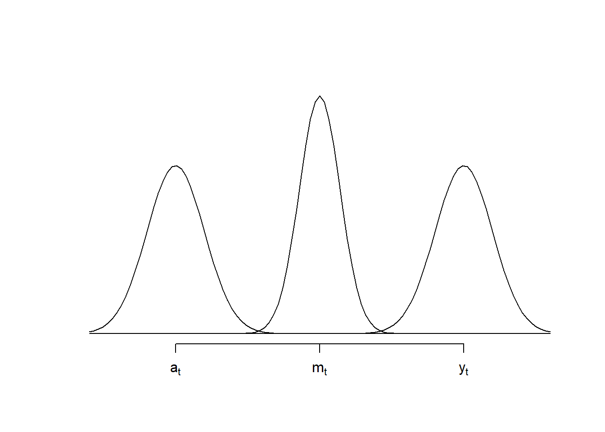

Não é incomum encontrar valores ausentes em séries temporais. Existem diveresas técnicas de imputação, como substituir os valores ausentes por previsões ou por alguma técnica de suavização, como a média dos vizinhos.
Suponha que a observação \(y_t\) está ausente. Em modelos lineares dinâmicos, consideramos simplesmete que não existe informação da amostra no tempo \(t\), logo a posteriori para o tempo \(t\) é igual a priori no tempo \(t\), onde seja, \(\theta_t|D_t\sim\hbox{Normal}(\boldsymbol{m}_t,\bldsymbol{C}_t)\), onde \(\boldsymbol{m}_t=\boldsymbol{a}_t\) e \(\boldsymbol{C}_t=\boldsymbol{R}_t\).
Em modelos lineares dinâmicos, um outlier é caracterizado por um valor observado atípico e esporádico. Isso implica que tal valor deve estar na cauda da distribuição \(y_t|D_{t-1}\). Considere o erro de previsão padronizado, dado por
\[\tilde{e}_t=\frac{y_t-f_t}{\sqrt{Q_t}} \sim\hbox{Normal}(0,1) \] É usual assumir que \(y_t\) é um outlier quando \(|\tilde{e}_t|>c\). Escolhendo \(c=2,5\), temos que \(P(|\tilde{e}_t|>c)\approx 0,99\).
Um outrlier cria um conflito entre fontes de informação. O exemplo abaixo ilustra o conflito entre a priori para o tempo \(t\) e a equação das observações, levando a uma posteriori que não faz sentido para as duas fontes.
o =10plot.new()plot.window(xlim=c(-3,3+o),ylim=c(0,.6))curve(dnorm(x), add = T)curve(dnorm(x,o), add = T)curve(dnorm(x,o/2,sqrt(1/2)), add = T)axis(1, at =c(0,o,o/2), labels=c(expression(a[t]) ,expression(y[t]), expression(m[t])))

Conflito entre as fontes de informação na presença de um outlier
Como o outlier é exporádico, uma solução simples, após identificá-lo, é considerar que a informação da amostra é inútil. Desse modo, ele pode ser tratado como um dado ausente.
Example 10.1 ` em construção
10.2 Monitoramento
Informações que alteram o nível podem ser incorporadas ao processo através de uma intervenção. O objetivo é permitir que o modelo se adapte rapidamente às informações futuras.
O monitoramento de uma série temporal tem como objetivo detectar outliers e mudanças no comportamento da série. Para isso, comparamos o modelo de referência, \(M_0\), que assume que as observações seguem o comportamento normal da série, contra um modelo alternativo, \(M_1\), que considera mais provável a ocorrência de valores anômalos (extremos).
A comparação entre os modelos \(M_0\) contra o modelo \(M_1\) é realizada através do Fator de Bayes baseado em \(y_t\), definido como
\[H_t=\frac{f_{M_0}(y_t |D_{t-1} )}{f_{M_1} (y_t |D_{t-1} ) }\]. Seguindo a escala de Jeffreys, um valor de \(H_t <0,135\)$ (H_t< -2)$ indica fortes evidências contra o modelo \(M_0\). Observe que \(H_t\) baixo dá evidências de que \(y_t\) é um outlier.
Para detectar evidências sobre \(M_0\) com os últimos \(k\) valores observados, utilizamos o Fator de Bayes cumulativo, definido como
Note quw \(H_t(1)=H_t\) e \(H_{t}(k)=H_t H_{t-1}(k-1)\). Um valor pequeno de \(H_t (k)\), com \(k>1\), indica que as últimas \(k\) observações dão evidências de mudança (em favor de \(M_1\)).
Embora o fator de Bayes acumulado seja uma ferramenta útil para a adequação do modelo \(M_0\), ele falha em responder rapidamente a mudanças locais. Para ilustrar esse conceito e os demais desta seção, considere que, para \(t_6\), observamos \(H_1=\cdots=H_5=2\) e \(H_6=0,1\) (ou seja \(y_6\) é um outlier). Observe que
\[H_5(5)=\prod_{v=1}^5 H_v=32,\] logo, a evidência acumulada está à favor de \(M_0\). Contudo, a evidência acumulada para o tempo \(t=6\) é \[H_6(6)=H_6H_{(5)}(5)=\frac{1}{10}32=3,2,\] que ainda dá evidências a favor de \(M_0\). Deste modo, o impacto do outlier \(y_6\) deve ser muito extremo para ser detectado pelo fator de Bayes acumulado. Na prática, ao se utilizar \(H_t(t)\), as observações anteriores vão mascarar a informação dadas por \(y_t\).
Para identificar o ponto de mudança mais provável, podemos identificar o grupo de observações sequenciais mais discrepantes ao minimizar \(H_t(k)\) com respeito à \(k\), fazendo
\[L_t=\min_{1\leq k\leq t}H_t(k).\] com \(L_1=H_1\). No nosso exemplo, teremos
\[\begin{align}H_6(1)&=H_6=0,1 \\ H_6(2)&=H_6 H_5 = 0,2 \\ H_6(3)&=H_6H_5H_4=0,4\\ H_6(4)&=H_6H_5H_4H_3=0,8\\ H_6(5)&=H_6H_5H_4H_3H_2=1,6\\H_6(6)&=3,2\end{align}\] de modo que \(L_6=0,1\). Deste modo, sabemos que ocorreu alguma mudança no tempo \(t=6\). É simples mostrar que \(L_1=\cdots=L_5=2\), o que implica que a mudança não ocorreu antes de \(t=6\).
O seguinte teorema tras alguns elementos importantes.
Theorem 10.1 Seja \[L_t=\min_{1\leq k\leq t}H_t(k)\,\] com \(L_1=H_1\). Então, \[L_t=H_t\min\{1,L_{t-1}\}\] para \(t>1\). O mínimo no tempo \(t\) é definido por \(l_t\), ou seja \(L_t=H_t(l_t)\), onde \(l_t\) é atualizado como segue
\[l_t=\left\{\begin{array}{ll}1+l_{t-1},&\hbox{ se }L_{t-1}<1,\\ 1,&\hbox{ se }L_{t-1}\geq 1.\end{array}\right.\]
Vejamos como a variável \(l_t\) pode ser utilizada. Se \(L_t\) é baixo o suficiente para trazer evidências contra \(M_0\), então
Se \(l_t=1\), então \(L_t=H_t(1)=H_t\). Isto implica que apenas a observação \(y_t\) gerou o aviso do monitor. Essa observação pode ser um outlier ou o sinal de que alguma mudança deve começar a partir do tempo \(t\)
Se \(l_t>1\), então existem diversas observações contribuindo para os fatores de Bayes em \(L_t\), sugerindo que a série se afastou do modelo \(M_0\) em algum lugar no passado. Isto implica que apenas a observação \(y_t\) gerou o aviso do monitor. O tempo de mudança sugerido é \(t-t_t+1\).
Portanto, o monitoramento é realizado observando a dupla \((L_t,t_t)\).
A análise de monitoramento, o modelo \(M_0\) é dado pela distribuição da previsão um passo a frente usual, ou seja, \(y_t|D_{t-1}\sim\hbox{Normal}(f_t,Q_t)\). Podemos definir os seguintes modelos alternativos \(M_1\):
\(M_1:\) um modelo se deslocando \(h_t>0\) unidades para a direita em relação à \(M_0\), ou seja \(y|D_{t-1}\sim\hbox{Normal}(f_t+h_t,Q_t)\).
\(M_1':\) um modelo se deslocando \(h>0\) unidades para a esquerda em relação à \(M_0\), ou seja \(y|D_{t-1}\sim\hbox{Normal}(f_t-h_t,Q_t)\).
Ao monitorar \(M_0\) contra \(M_1\) e \(M_0\) contra \(M_1'\), estaremos verificando se há evidências de intervenção tanto para a direita quanto para a esquerda. Considerando o caso \(M_0\) contra \(M_1\), teremos que
\[H_t=\frac{\frac{1}{\sqrt{2\pi Q_t}}e^{-\frac{1}{2Q_t}(y_t-f_t)^2}}{\frac{1}{\sqrt{2\pi Q_t}}e^{-\frac{1}{2Q_t}(y_t-f_t-h_t)^2}}=\exp\left\{-\frac{1}{2Q_t}[2h_t(y_t-f_t)- h^2_t]\right\}\] ou ainda \[\log H_t=-\frac{1}{2Q_t}[2h_t(y_t-f_t)- h_t^2].\]
Note que \(h_t\) é um afastamento em relação à média, sendo razoável defini-lo em função do desvio padrão. Então, seja \(h_t=d\sqrt{Q_t}\), com \(d>0\), Observe que
\[\log H_t = -\frac{1}{2Q_t}[2d\sqrt{Q_t}(y_t-f_t)- d^2 Q_t]\Rightarrow \log H_t=\frac{d ^2}{2}-d\tilde{e}_t\] onde, sob \(M_0\), \(\tilde{e}_t\sim\hbox{Normal}(0,1)\). Supondo \(\log H_t < -2\), teremos que
Se \(d=1\), então \(d^2/2 -d\tilde{e}_t < -2\Rightarrow e_t>2,5\). Portanto, um resíduo padronizado maior que 2,5 faz o monitor reagir. Note que \(P(\tilde{e}_t>2,5)\approx 0,994\), fazendo com que o monitor reaja apenas em casos extremos.
Se \(d=2\), então \(d^2/2 -d\tilde{e}_t < -2\Rightarrow e_t>2\). Como \(P(\tilde{e}_t>2)\approx 0,977\), sendo uma proposta mais sensível
Se \(d=2\), então \(d^2/2 -d\tilde{e}_t < -2\Rightarrow e_t>2,1666...\). Como \(P(\tilde{e}_t>2,1666...)\approx 0,984\), esta é outra proposta mais sensível que \(d=1\).
Escolher \(d=2\) ou 3 é a saída prática, uma vez que um valor de \(\tilde{e}_t\) moderadamente grande gera evidência suficiente para gerar \(\log H_t< -2\).
O monitor é construído a partir de
\[L_t=\min_{1\leq k\leq t} H_t (k),\] onde valores pequenos de \(L_t\) indicam que pelo menos uma anomalia ocorreu até o tempo \(t\). O valor \(l_t\) é o índice de tempo que minimiza essa expressão, indicando a duração da sequência de observações que mais se afasta do modelo de referência. Definindo \(l_t\) como sendo o valor que satisfaz \(L_t=H_t (l_t )\), temos uma variável que indica a persistência da anomalia. Portanto, para o tempo \(t\), se \(L_t<τ\):
Se \(l_t=1\), então \(y_t\) será considerado um outlier sob o modelo \(M_0\)
Se \(l_t>1\), então diversas observações contribuíram para que a série se afastasse do modelo \(M_0\), com início provável no tempo \(t-l_t+1\). Nesse caso, o tempo \(t\) é denominado ponto de intervenção. Um valor típico para \(\tau\) é \(e^{-2}\).